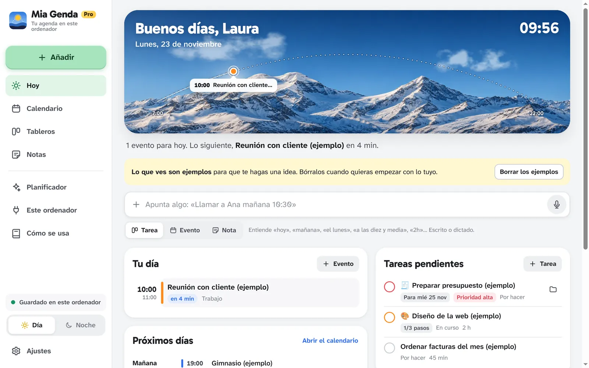
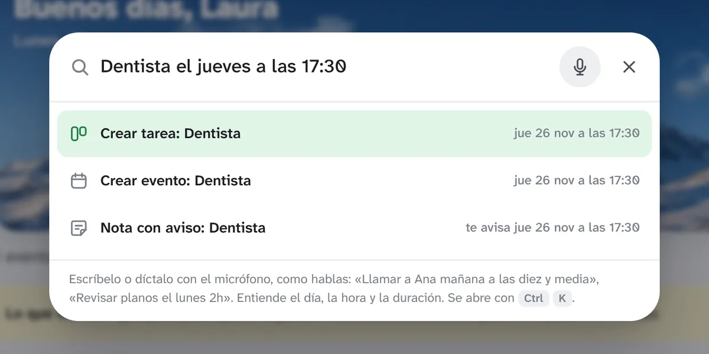
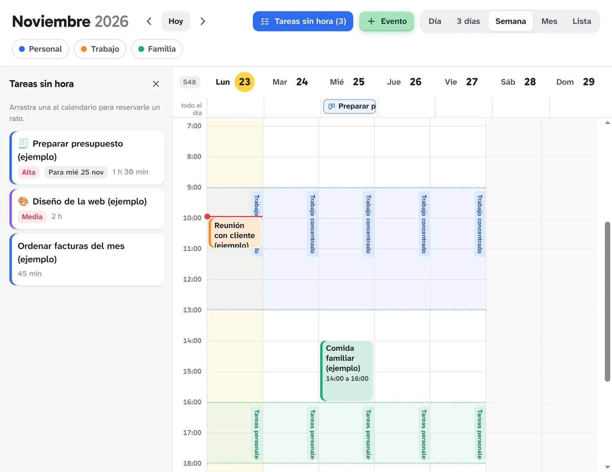
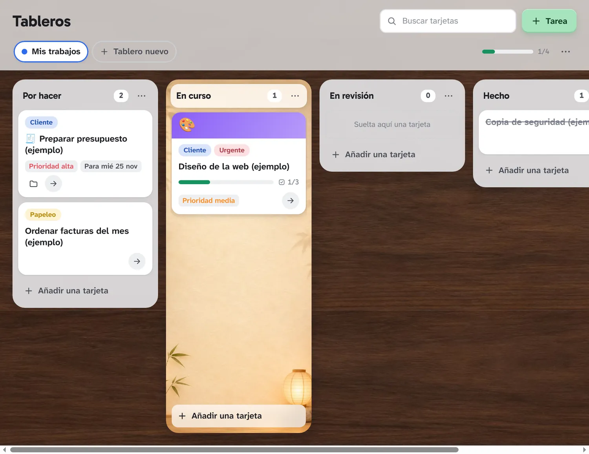
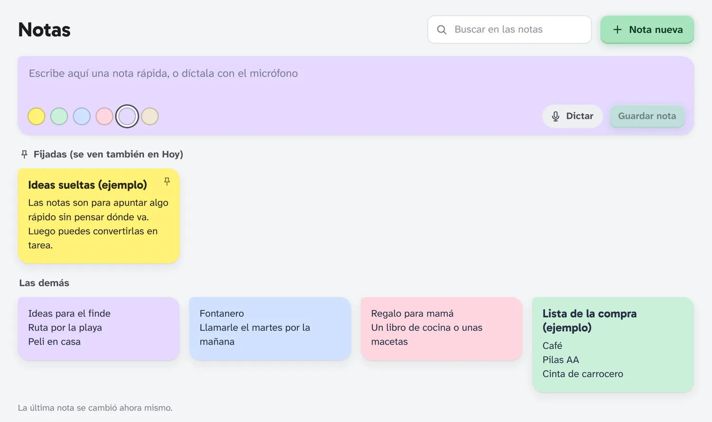
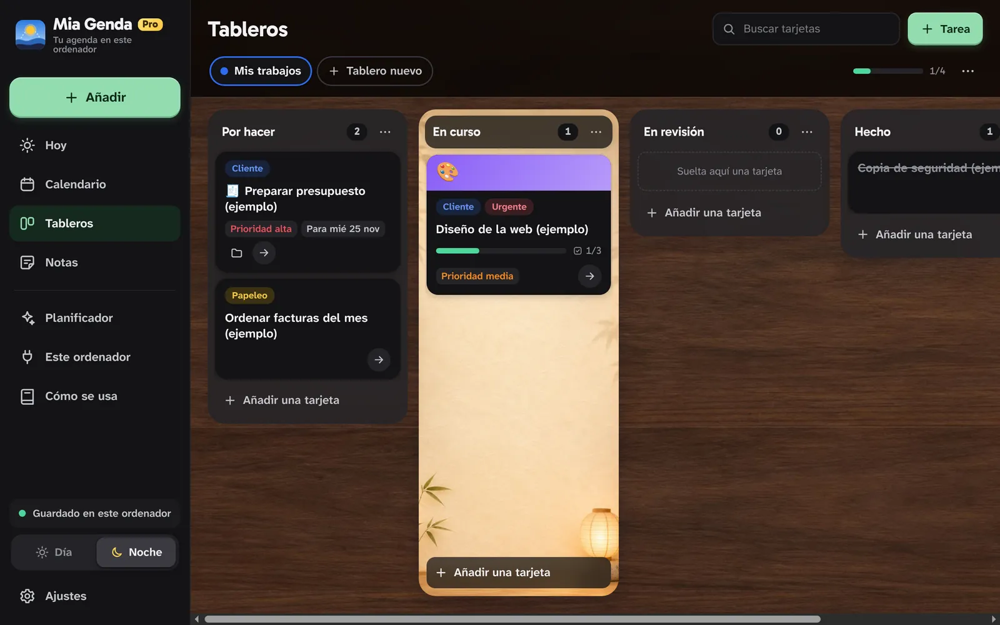

La pantalla Hoy: lo que te toca ahora, lo que viene después y lo que tienes pendiente.
Todo tu día en un solo sitio
Mia Genda Pro junta lo que normalmente tienes repartido entre el calendario, la libreta y los pósits: tus citas, tus trabajos y tus notas sueltas. Al abrirla ves tu día de un vistazo.
Apúntalo como lo dirías
Escribe «Dentista el jueves a las 17:30» y Mia Genda entiende el día y la hora. Tú solo eliges si es una tarea, una cita o una nota con aviso.
- Entiende «mañana», «el lunes», «a las diez y media» o «dentro de una hora».
- Con Ctrl + K (en Mac, Cmd + K) se abre desde cualquier pantalla.
- También puedes dictarlo con el dictado de tu ordenador: Windows + H en Windows, o dos veces la tecla Fn en Mac.

Tu semana, con sitio para trabajar
Mira tu agenda por días, de tres en tres, por semanas, por meses o en lista. Las tareas que aún no tienen hora esperan a un lado: arrástralas a un hueco libre y quedan reservadas en tu calendario.
- Bloques de tiempo que se repiten, como «Trabajo concentrado» de 9 a 13.
- El planificador coloca tus pendientes en los huecos libres y te avisa si algo choca.
- Un color para cada calendario: personal, trabajo, familia…

Tus trabajos, en tableros
Columnas como «Por hacer», «En curso» y «Hecho», con tarjetas que arrastras de una a otra, igual que en Trello. Cada tarjeta guarda lo que necesitas para ese trabajo.
- Fecha límite, prioridad, etiquetas, pasos y fotos.
- La carpeta del trabajo en tu ordenador, que se abre con un clic.
- Un fondo para cada tablero y para cada columna: madera, mármol, lino y muchos más, o tus propias fotos.

Notas de colores
Para lo que quieres apuntar sin pensar dónde va: una idea, la lista de la compra, un teléfono. Escríbela o díctala y listo.
- Fíjala y la verás también en Hoy.
- Ponle un aviso para que te la recuerde a una hora.
- Si acaba siendo un trabajo, conviértela en tarea.

De día o de noche
Un botón pasa toda la agenda a modo noche, en negro o en azul noche. Si lo prefieres, cambia sola según la hora o como tenga puesto tu ordenador.

Avisos a tiempo
Te avisa antes de cada cita, tarea o nota, también con la ventana cerrada.
Tus otros calendarios
Ve en la misma agenda tus calendarios de Google, Outlook o iCloud.
Copia de cada día
Guarda sola una copia diaria de tu agenda en la carpeta Documentos.
Lista al encender
Si quieres, se abre sola al encender el ordenador, sin estorbar.
Tu agenda es tuya: se queda en tu ordenador y nadie más la ve.
Sin cuentasNo hay que registrarse ni recordar ninguna contraseña. La abres y empiezas.
Sin nubeTus citas, trabajos y notas no salen de tu ordenador.
Casi sin internetSolo se conecta para leer los calendarios que tú enlaces y para ver si hay una versión nueva.
Descargar Mia Genda Pro
Elige la de tu ordenador. Las tres son la misma agenda.
Mac con chip Apple
M1, M2, M3, M4 o posterior, con macOS 13 Ventura o más nuevo.
Archivo .zip de unos 120 MB.
Descargar para MacMac con Intel
Mac con procesador Intel y macOS 13 Ventura o más nuevo.
Archivo .zip de unos 124 MB.
Descargar para Mac¿Qué Mac tengo? Abre el menú de la manzana, arriba a la izquierda, y pulsa Acerca de este Mac. Si pone «Chip» seguido de Apple M1, M2…, es un Mac con chip Apple. Si pone «Procesador» y luego Intel, es un Mac con Intel.
Cómo instalarla
Se tarda un par de minutos. La primera vez, tu ordenador te dirá que no reconoce el programa: es normal, porque Mia Genda Pro no lleva la firma de pago de Microsoft ni la de Apple. Aquí tienes qué pulsar.
En Windows
- Abre el archivo que has descargado, Instalar-Mia-Genda-Pro.exe. Lo encontrarás en la carpeta Descargas.
- Si aparece la ventana azul «Windows protegió su PC», pulsa Más información y después Ejecutar de todas formas.
- Pulsa Instalar. No hace falta ser administrador.
- Mia Genda Pro se abre sola. A partir de ahora la tienes en el escritorio y en el menú Inicio.
En Mac
- Abre el archivo .zip que has descargado con un doble clic. Aparece la app Mia Genda Pro.
- Arrástrala a la carpeta Aplicaciones.
- Ábrela. El Mac avisa de que no puede comprobarla: pulsa Aceptar.
- Ve a Ajustes del Sistema, entra en Privacidad y seguridad, baja hasta el final y pulsa Abrir igualmente. Solo hay que hacerlo la primera vez.
xattr -cr "/Applications/Mia Genda Pro.app"
Tus primeros minutos
- Dile tu nombre y tu ciudadLa ciudad sirve para que el cielo de la portada tenga el amanecer, el atardecer y la luna de tu cielo.
- Mira los ejemplos y bórralosTe deja unas citas, un tablero y unas notas de muestra. Cuando quieras empezar con lo tuyo, pulsa Borrar los ejemplos.
- Apunta lo primeroPulsa Añadir y escríbelo como lo dirías: «Llamar a Ana mañana a las 10:30».
- Prueba los avisosEn Este ordenador pulsa Probar un aviso. Ahí mismo puedes hacer que se abra al encender el ordenador.
Siempre al día
Cuando hay una versión nueva, Mia Genda Pro te avisa. En Windows pulsas Actualizar ahora y ella sola se descarga, se instala y vuelve a abrirse. En Mac pulsas Descargar la versión nueva y arrastras la app a Aplicaciones, encima de la antigua.
Tu agenda no se toca al actualizar.
Dónde está tu agenda
Dentro del programa, en tu ordenador. Además, cada día deja una copia en la carpeta Documentos › Mia Genda Pro › Copias y guarda las de los últimos 30 días.
Si desinstalas el programa, tu agenda y tus copias se quedan en el ordenador.
Preguntas frecuentes
¿Necesito internet para usarla?
No. Mia Genda Pro funciona sin conexión. Solo usa internet para leer los calendarios de Google, Outlook o iCloud que enlaces y para mirar si hay una versión nueva.
¿Me avisa aunque cierre la ventana?
Sí. Al cerrar la ventana, Mia Genda Pro sigue en marcha para avisarte: en Windows queda junto al reloj, abajo a la derecha, y en Mac, en el Dock. Para cerrarla del todo, usa Salir. En Mac, la primera vez te preguntará si dejas que te mande avisos: dile que sí.
¿Cómo veo mis calendarios de Google, Outlook o iCloud?
En Este ordenador, en el apartado de calendarios, pega el enlace privado del calendario (el que termina en .ics). Sus citas aparecen en tu agenda con su color. Se ven aquí, pero se cambian en Google, Outlook o iCloud.
¿Funciona en el móvil o en otro ordenador a la vez?
Mia Genda Pro es para ordenadores con Windows o Mac, y cada ordenador tiene su propia agenda. No se sincroniza entre aparatos: así nada sale de tu ordenador.
¿Por qué Windows o el Mac dicen que no reconocen el programa?
Porque no lleva la firma de pago de Microsoft ni la de Apple. Ese aviso sale con cualquier programa sin esa firma. Los pasos de Cómo instalarla te dicen qué pulsar; solo pasa la primera vez.
¿Cómo dicto en vez de escribir?
Con el dictado de tu ordenador. Pon el cursor donde quieras escribir y pulsa Windows + H en Windows. En Mac, pulsa dos veces la tecla Fn (o la del micrófono). El botón del micrófono de Mia Genda te lo recuerda.
¿Cómo la desinstalo?
En Windows: Configuración › Aplicaciones, busca Mia Genda Pro y pulsa Desinstalar. En Mac: arrastra la app de Aplicaciones a la Papelera. En los dos casos tu agenda y tus copias se quedan en el ordenador.